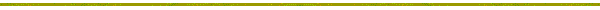

Web sitemiz hakkýnda ne düþündüðünüzü bilmek isteriz. Lütfen görüþlerinizi ortak konuk defterine yazýn; böylece düþüncelerinizi diðer ziyaretçilerle paylaþabiliriz.
Açýklamalarýnýzý gönderdikten sonra, kütüðe eklediklerinizi görmek için bu
sayfayý tarayýcýnýzla yeniden yüklemeniz gerekir.
[guestlog.htm]
Son düzeltme tarihi: 06/30/07 02:38:15 +0300. "